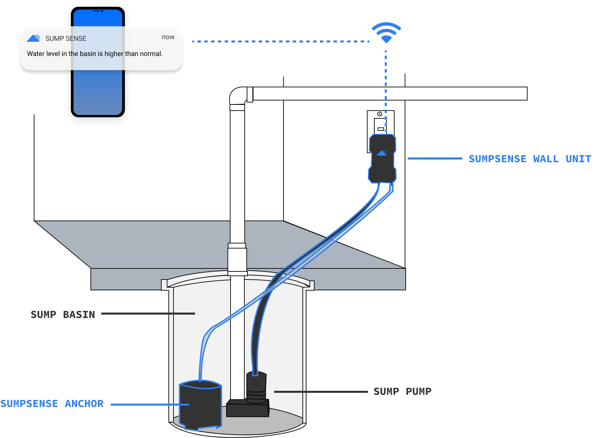
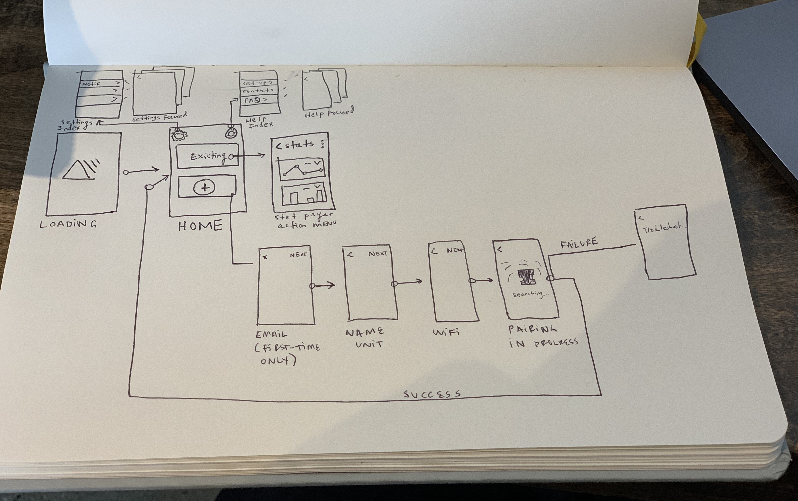

displaying sump pump data
background
Sump pumps are unglamorous but critical devices that prevent basements from flooding. Since they are electrical/mechanical devices, they can fail.
Boulder Automation's SumpSense is an integrated hardware/software solution that alerts users of any issues with their sump pump. It's like a Nest smoke alarm, but instead of smoke it detects sump pump failures. I am designing the SumpSense mobile application (currently in iOS private beta).
my role
In addition to designing the mobile application that accompanies the sump pump sensor, I've also been a bit of a deisgn jack of all trades on the project; from designing the logo and brand to creating pitch decks.
how it works
The SumpSense wall unit receives data from the from the anchor and hose installed in the sump pump. It sends that data to the mobile application via WiFi.
mapping out a minimum viable product
The app + accompanying hardware is under active development; we're focused on a minimum viable product that we can get in front of beta users to begin testing + iterating. My first step was to work with my teammates to map out the minimum set actions the app needs to support.
mobile app actions
1. Initial setup
Pairing the sensor device with the app over Wifi
2. Configure notification preferences
Ideally, SumpSense is a "set it and forget it" experience. Sometimes the best interface is no interface.
3. Display data
For users who are curious about what's going on with their sump pump, the app displays a simple data roll-up.
sketching architecture
Once the team was aligned on the core user needs that the application would meet, I mapped out a simple system architecture of each unique screen in the application.
We tried to keep it as simple as possible; still working under the hypothesis that if all goes according to plan, once a user has paired their unit and configured their notifications, this app should really just collect dust in a folder on someone's phone.
defining core flows
Once we confirmed the main actions the app should support with a few homeowners who met our ideal customer profile and the team agreed on a high-level architecture, I moved on to wireframes of the core application flows. Shown below (in all the messy glory of my actual Figma canvas) are the flows for pairing the SumpSense hardware with the mobile application.

what's next? iterate, iterate
Before I joined the team, the first version of the application was written as a proof-of-concept in Objective C. The team is now re-writing the application in React Native. Once that initiative is complete, we will give test units to a set of beta testers and begin the fun part: seeing how the system actually works in the wild.
Testing the entire system
functional prototype
A functional prototype of the entire flow is available upon request. Shoot a note to emily at carlin.com to check it out!